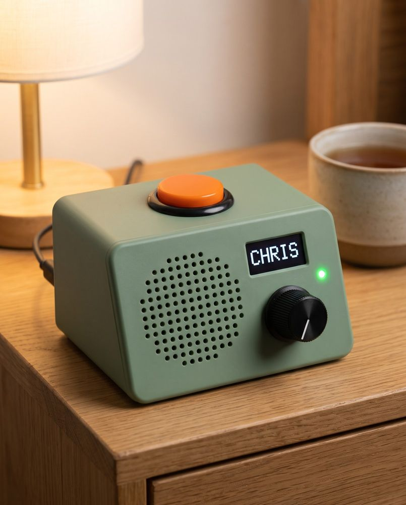
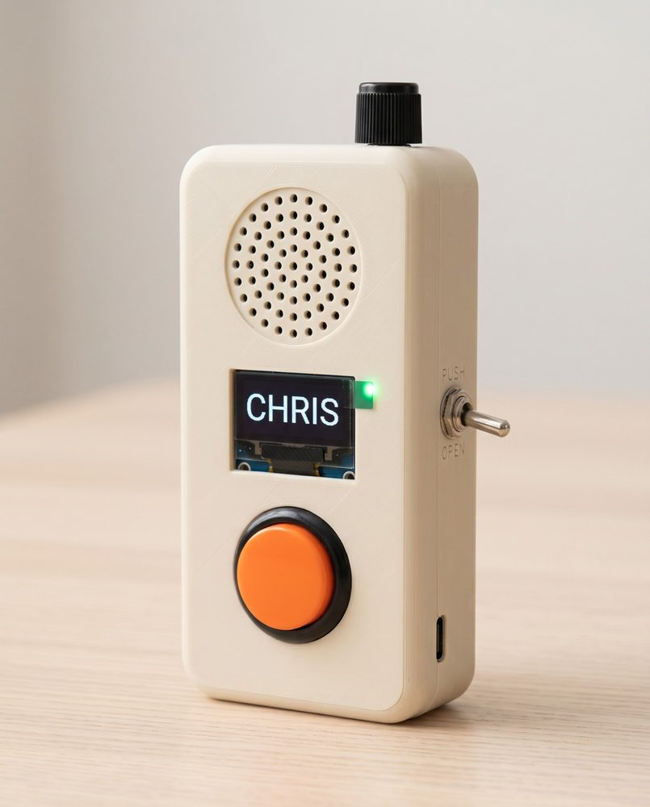
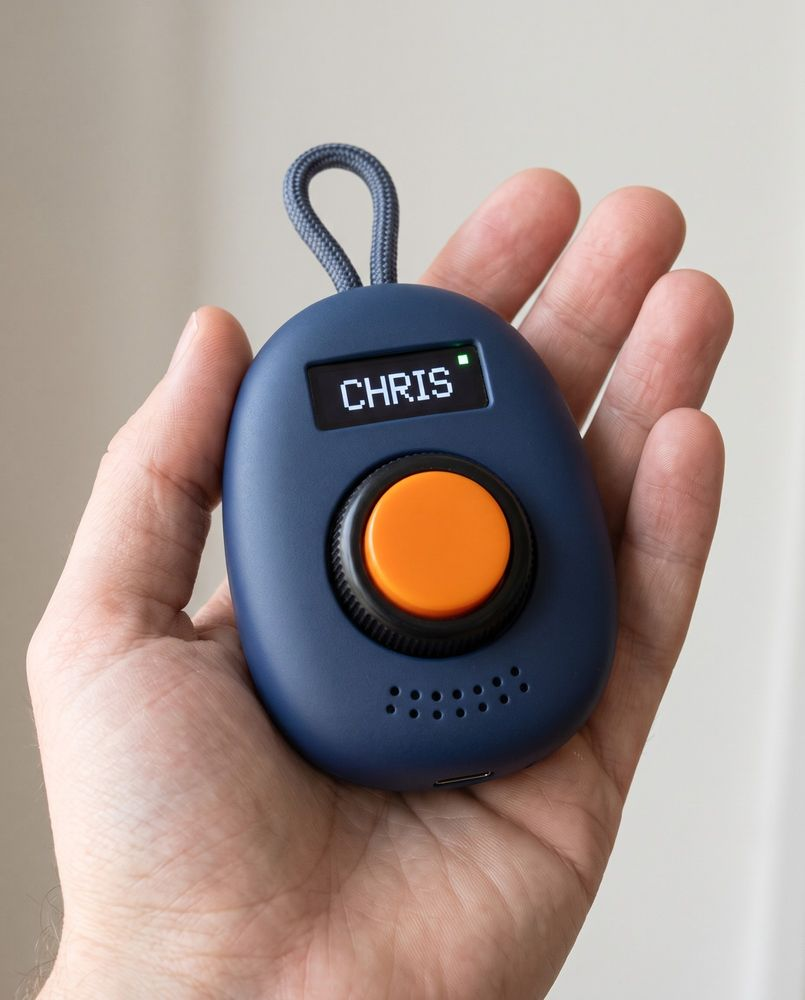
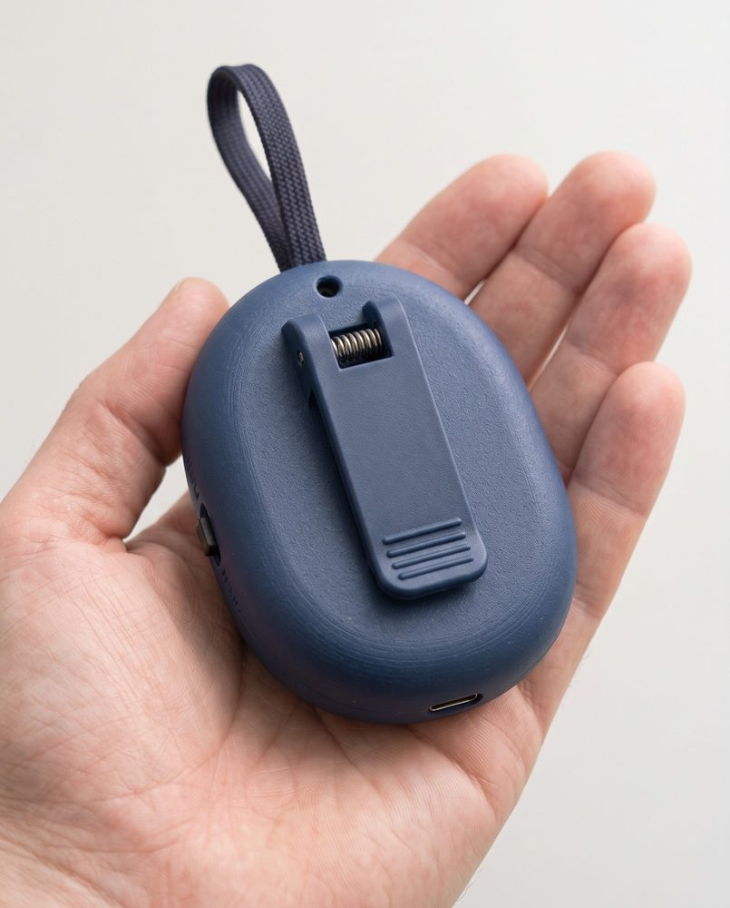
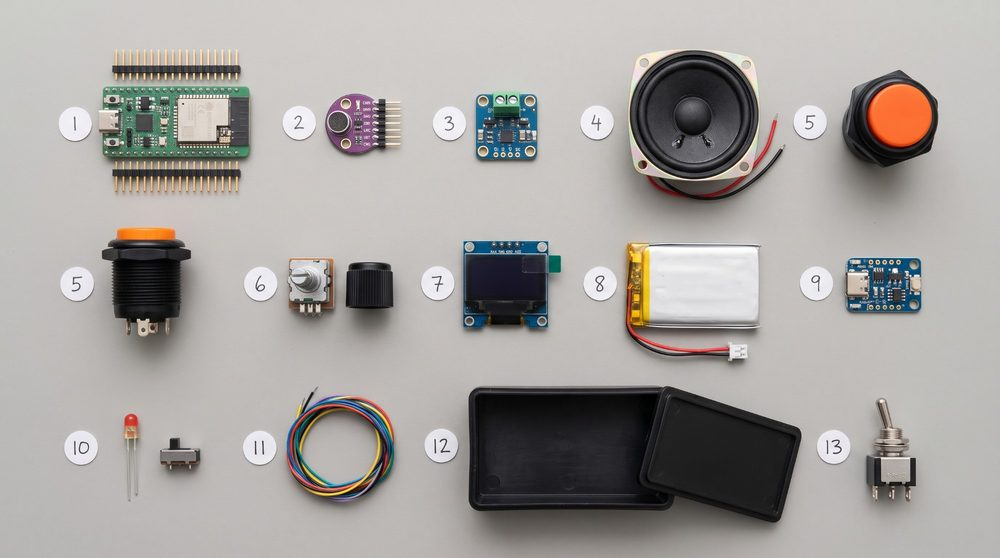

Hold to talk.
Let go to listen.
Mobile phones can be tricky for older people. Small icons, passcodes, updates and menus get in the way when all they want is an easy way to reach the people they love.
So we're building Grandad a radio with one big orange button. It reaches the family over Wi-Fi, whether they're in the next room or the next town.

Have a go
Hold the orange button (or the space bar) to talk. Tap the knob to change channel, flip the switch, or have Chris call in. Turn your sound on.
Hold the button below, or hold the space bar.
What's on it
- 1The orange button
Hold it to talk. It chirps when it's ready, so the first word isn't lost. - 2The knob
Picks who you're talking to. Each click says the name out loud, and it stops at each end so fully left is always Chris. - 3The screen and light
One word in big letters: TALK, LISTEN, WAIT or OFFLINE. The light beside it is red whenever the microphone can hear. - 4The PUSH / OPEN switch
New. PUSH is a normal walkie-talkie. OPEN lets you talk hands-free, taking turns. More on that below. - 5Press the knob
Plays the last message again.
The sounds here are rough versions made in your browser. Spoken names use your browser's voice.
Two ways to talk
A switch on the front sets how the radio talks. Holding a button down is fine for a quick message, but harder for a long chat or for stiff hands. So the radio gets a second mode.
Like a walkie-talkie
Hold the button, talk, let go. The microphone only hears you while the button is down. This is how it starts out of the box.
Hands-free, taking turns
Flip the switch and just talk. It sends when you speak and goes quiet when you stop. When Chris talks back, you hear them. The red light stays on the whole time, so you know it can hear you.
| PUSH | OPEN | |
|---|---|---|
| Microphone on | Only while the button is held | Whenever the switch is on OPEN. Red light on. |
| Who can talk | One at a time | One at a time, swapping by itself |
| Channels | Any channel on the knob | Whichever channel the knob is on, group channels included. The knob is locked while it's open. |
| Off the stand | 4 to 9 days | About a day if mostly quiet, about 4 hours of solid talking |
| Data | Only when someone talks | Only when someone talks. Silence sends nothing. |
The thinking behind the switch
A switch, not a setting
You can see and feel which way it's set, even in the dark. Nobody can change it from somewhere else. That's the main reason for a physical switch.
Taking turns, not a phone call
While Chris is talking, Grandad's microphone is muted so the speaker doesn't echo back down the line. A true two-way call needs echo cancelling, which takes about a third of the chip and probably a different sound board. That can come later.
The red light rule
If the red light is on, the microphone can hear. In OPEN it stays on, the screen says OPEN, and Chris's radio shows that Grandad's channel is open.
It says what it's doing
Flip to OPEN and it says who can hear, such as "Channel open to family. Everyone on this channel can hear you". Flip back and it says "Channel closed".
Groups too, with care
OPEN works on a group channel, so the whole family can chat hands-free. Everyone on that channel hears what the microphone picks up, so the radio names the channel out loud first, and every other radio on it shows that Grandad's is open. The knob locks while it's open, so an open microphone can't be turned onto another channel by accident.
It pauses itself
After ten minutes of nobody talking, it pauses and says so. Press the orange button to carry on. Pressing it any time in OPEN pauses or resumes.
Best on the stand
In OPEN the radio has to stay fully awake, so the battery goes in hours rather than days. It's meant for when it's sitting on its stand.
Grandad decides
It's his radio and his switch. We explain it, ask him, and ask again later. The printed card says what the red light means.
Pick a shape
The same parts fit three different cases. All of these are generated concept pictures, not photos of real units.
Bedside radio
Sits on its stand by the chair, always charged. The button is on top, right where a hand lands.

Classic handheld
The walkie-talkie shape everyone already knows. Good for carrying round the house or garden.


Pocket pebble
Small enough for a pocket. A sprung clip on the back grips a belt or a shirt pocket, and there's a loop for a lanyard. The knob is a ring around the button.
What's inside
One small ESP32 chip does the work: Wi-Fi, squeezing the voice down, and locking it so only our radios can hear it. Everything else is a handful of cheap parts. Tap a part to find it in the picture.

Fig. 2 The parts for one radio. A generated reference picture, not our actual kit. The orange button appears twice, side on and from above.
Or about NZ$25 to 30 without a battery, if it never leaves its stand. Prices are November 2026 search prices including GST, not quotes. Shipping is extra.
Two stages
First we prove the idea on hardware we already own. Then we build the radio above.
How it adds up
Mouth to ear, through the server and back. About 0.2 s on mobile data. Emergency-service radio networks measure about 0.4 s.
With 20 minutes of talk a day on a 1000 mAh battery. The R1 manages about a day and a half.
A free cloud plan works; a paid one in Auckland or Sydney is under NZ$10 a month.
For 20 minutes a day. Only matters on a SIM card; at home it uses the Wi-Fi.
Estimates from our research. Real figures get measured on the bench.
The card that comes with it
Printed and kept beside the radio.
Your radio
- To talk: hold the orange button, wait for the chirp, then talk. Let go when you've finished.
- To listen: you don't need to do anything. It clicks, then you hear them.
- To choose who: turn the knob. It says the name out loud.
- To talk without holding the button: flip the switch to OPEN. The red light means it can hear you. Flip it back to PUSH to stop.
- To hear the last message again: press the knob.
Keep it on its stand so it stays charged.
This is not an emergency alarm. In an emergency, call 111.
Questions
Is it an emergency alarm?
No. In an emergency, call 111. The radio has no Help or SOS button. If Grandad lives alone or is frail, it sits alongside a monitored medical alarm, not instead of one.
Can anyone listen in?
No. Each message is locked on the radio and only unlocked on the other radios. The server in the middle passes messages on but can't open them. The microphone only hears while the button is held, or while the switch is on OPEN with the red light on. There's no way to switch it on from somewhere else.
Why not just buy a pair of walkie-talkies?
If you live within a kilometre or two, a pair of licence-free UHF radios for about $80 is simpler. They fall down on distance, hills, privacy (anyone can tune in), replaying missed messages and telling family when the battery is low.
What's the Rabbit R1 got to do with it?
The R1 is a small gadget that happens to have a button, a wheel, a speaker and Wi-Fi. We already own two, so they're the quickest way to test the idea with Grandad. Rabbit has stopped making them and the battery is short, so it isn't the final radio.
Can more of the family join?
Yes. Each channel can hold several radios, and the knob picks the channel. OPEN works on group channels too: everyone on the channel can then hear, and still only one person talks at a time.